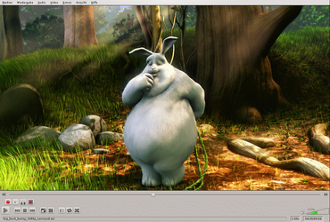
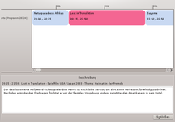
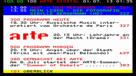
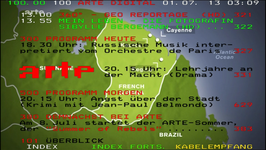
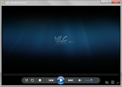
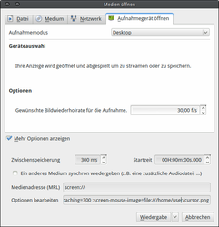
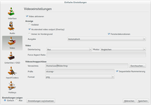
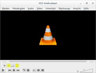

VLC
Dieser Artikel wurde für die folgenden Ubuntu-Versionen getestet:
Ubuntu 17.10 Artful Aardvark
Ubuntu 16.04 Xenial Xerus
Ubuntu 14.04 Trusty Tahr
Zum Verständnis dieses Artikels sind folgende Seiten hilfreich:
- Installation
- Bedienung
- Tipps und Tricks
- VLC über einen Webbrowser steuern
- VLC als Streaming-Server
- VLC und DVB-T bzw. DVB-C
- VLC und DVB-S
- Electronic Program Guide
- Teletext
- TV-Aufnahmen und "Time-Shift"
- VLC und Lirc
- Rippen mit VLC
- VLC mit Jack
- VLC auf der Kommandozeile
- Skins
- Bevorzugte Sprachspur bei internationale...
- DVD mit Vorspann abspielen
- Aktivieren proprietärer Encoder
- Deinterlacing
- Screencasts erstellen
- Bilder aus Video extrahieren
- Problembehebung
- Links
Der VideoLAN Client 
 (VLC), auch "VLC media player" genannt, ist ein vollständiger Medienplayer, der fast alle Mediendateien (MPEG1, MPEG2, MPEG4, H.264/AVC, DivX, MOV, Matroska (MKV), WMV, QuickTime, AC3/DTS, MP3, MP4, Ogg/Vorbis, WAV inklusive DTS), DVDs, Blu-Ray ohne Kopierschutz, VCDs und Audio-CDs unterstützt.
(VLC), auch "VLC media player" genannt, ist ein vollständiger Medienplayer, der fast alle Mediendateien (MPEG1, MPEG2, MPEG4, H.264/AVC, DivX, MOV, Matroska (MKV), WMV, QuickTime, AC3/DTS, MP3, MP4, Ogg/Vorbis, WAV inklusive DTS), DVDs, Blu-Ray ohne Kopierschutz, VCDs und Audio-CDs unterstützt.
Bei der Installation von VLC werden benötigten Codecs als Abhängigkeiten mitinstalliert, so dass eine Nachinstallation nicht notwendig ist. Eine vollständige Übersicht der unterstützten Formate findet man auf videolan.org . VLC kann auch unvollständige oder von anderen Anwendungen geöffnete Videos abspielen. Eine Besonderheit ist, dass der VLC auch als Streaming-Server verwendet werden kann (siehe Tipps und Tricks).
|  |
| VLC |
Installation¶
VLC kann über die offiziellen Paketquellen bezogen werden. Folgendes Paket muss installiert werden:[1]
vlc (universe - Multimedia-Player und Streamer)
 mit apturl
mit apturl
Paketliste zum Kopieren:
sudo apt-get install vlc
sudo aptitude install vlc
Darüber hinaus stehen Zusatzmodule (Plugins) zur Verfügung, die aber nur für bestimmte Zwecke gebraucht werden:
vlc-plugin-fluidsynth (universe - MIDI-Support)
vlc-plugin-pulse (universe - PulseAudio-Plugin für VLC)
vlc-plugin-jack (universe - Jack audio plugins für VLC)
vlc-plugin-sdl (universe - SDL video and audio output plugin für VLC)
mit apturl
Paketliste zum Kopieren:
sudo apt-get install vlc-plugin-fluidsynth vlc-plugin-pulse vlc-plugin-jack vlc-plugin-sdl
sudo aptitude install vlc-plugin-fluidsynth vlc-plugin-pulse vlc-plugin-jack vlc-plugin-sdl
Möchte man VLC als Medienplayer innerhalb von Firefox benutzen, so kann man ein Browser-Plugin für VLC installieren:
browser-plugin-vlc (universe - VLC-Multimedia-Plugin für Firefox)
mit apturl
Paketliste zum Kopieren:
sudo apt-get install browser-plugin-vlc
sudo aptitude install browser-plugin-vlc
Um MPEG-4-Dateien mit Ton (AAC) abspielen zu können, ist zusätzlich die Installation folgender Pakete nötig:
libxvidcore4 (universe)
libfaac0 (multiverse)
mit apturl
Paketliste zum Kopieren:
sudo apt-get install libxvidcore4 libfaac0
sudo aptitude install libxvidcore4 libfaac0
Gegebenenfalls muss unter "Einstellungen → Einstellungen... → Audio (erweiterte Optionen) → Ausgabe-Modul" von "Standard" auf "RTS-Audioausgabe" umgeschaltet werden.
Sollten Video-DVDs nicht abgespielt werden, findet man dazu weitere Hinweise im Artikel Codecs.
Bedienung¶
Nach erfolgreicher Installation befindet sich VLC im GNOME-Menü unter "Anwendungen → Unterhaltungsmedien → VLC Media Player". Bei KDE 4 ist er im K-Menü unter "Programme → Multimedia → VLC Media Player" zu finden.
Das Einstellungsmenü erreicht man im geöffneten Player unter "Extras → Einstellungen" oder Taste P . Die Wiedergabeliste erreicht man im geöffneten Player unter "Wiedergabeliste → Wiedergabeliste anzeigen" oder Taste L .
Radio-Empfang¶
Allgemein¶
VLC bietet die Möglichkeit, Radiostreams abzuspielen. Dazu die Internet-Adresse des Radiostreams in die Zwischenablage kopieren und in "Medien → Netzwerkstream öffnen → Netzwerk" ( Strg + N ) im Feld "Adresse" einfügen. Anschließend muss man die "Wiedergabe-Taste" drücken, die sich unten befindet. Analog kann die Funktion "URL aus Zwischenablage öffnen" ( Strg + V ) verwendet werden.
SHOUTcast¶
Hinweis:
Ab Version 1.1 wurden die "Shoutcast-Radiolisten" aus lizenztechnischen Gründen entfernt. Dafür sind andere Radiolisten enthalten (bsp. Icecast Stream Directory). Diese lassen sich über den Punkt Internet in der Seitenleiste der Wiedergabeliste abrufen.
Übersicht der Radio-Streams auf SHOUTcast.com .
DVD-Film von der Festplatte abspielen¶
Man wählt einfach unter "Medien → Medien öffnen → Volume" bei der Option "Volumeauswahl" "DVD" und als Laufwerk den jeweiligen Ordner, wo sich der Film auf der Festplatte befindet (also der Ordner VIDEO_TS mit den .bup-, .ifo- und .vob-Dateien). .iso-Dateien lassen sich über "Medien → Dateien öffnen..." direkt aufrufen und wie gewöhnliche DVDs bedienen.
Tastenkürzel¶
| Tastenkürzel | |||
| Wiedergabe und Navigation | |||
| Abspielen / Pause | Strg + ↑ | Lautstärke anheben | |
| Strg + L | Wiedergabeliste aufrufen | Strg + ↓ | Lautstärke absenken |
| Strg + P | Einstellungen aufrufen | M | Ton aus / an |
| Strg + Q | VLC beenden | ⇧ + N | Nächstes DVD-Kapitel auswählen |
| F | Vollbild | ⇧ + P | Vorheriges DVD-Kapitel auswählen |
| Esc | Vollbild verlassen | ⇧ + O | Nächsten DVD-Titel auswählen |
| + | Schneller | ⇧ + B | Vorherigen DVD-Titel auswählen |
| - | Langsamer | ⇧ + M | Zum DVD-Menü gehen |
| N | Nächstes | ↑ | Nach oben bewegen |
| P | Vorheriges | ↓ | Nach unten bewegen |
| S | Stopp | → | Nach rechts bewegen |
| Strg + → | Vorwärtsspulen um eine Minute | ← | Nach links bewegen |
| Strg + ← | Rückwärtsspulen um eine Minute | ⏎ | Bestätigen / Aktivieren |
| Alt + → | Vorwärtsspulen um zehn Sekunden | ⇧ + → | Vorwärtsspulen um fünf Sekunden |
| Alt + ← | Rückwärtspulen um zehn Sekunden | ⇧ + ← | Rückwärtsspulen um fünf Sekunden |
Tipps und Tricks¶
VLC über einen Webbrowser steuern¶
Im VLC-Player ist auch ein kleiner HTTP-Server integriert, um den Player über ein Webinterface steuern zu können. Der HTTP-Server wird beim VLC-Player für zwei Dinge verwendet, zum einen zum Streamen über HTTP, worauf hier nicht näher eingegangen wird, zum anderen zur Fernsteuerung des VLC über einen Webbrowser.
Um den VLC-Player mit HTTP Interface zu starten, gibt es folgenden Befehl:
vlc -I http [--http-src /directory/ --http-host host:port]
Zum Starten des VLC mit HTTP-Interface übergibt man den Parameter -I http. Optional kann man auch noch einen alternativen Pfad zum Root-Verzeichnis des Webservers mit --http-src /ordner/des/webinterfaces/ angeben, weiterhin kann man auch bestimmen, an welchem Interface (Netzwerk) und an welchem Port der HTTP Server "lauschen" soll. Dies geschieht mit --http-host host:port. Wenn die zusätzlichen Parameter nicht mit übergeben werden, wird als Standardwebverzeichnis /usr/share/vlc/http/ angenommen, für Host und Port wird <Alle Netzwerke>:8080 angenommen.
Wenn VLC mit den folgenden Parametern gestartet wird, lauscht der VLC am Netzwerk-Interface mit der Adresse 192.168.2.123 am Port 8080.
vlc -I http --http-host 192.168.2.123:8080
Möchte man das normale Interface und das Webinterface zeitgleich verwenden, geht dies mit folgendem Befehl:
vlc --extraintf http
Wenn man das Webinterface jedesmal mitstarten möchte, wenn man den VLC-Menüeintrag anklickt, kann man das in VLC unter "Extras → Einstellungen → alle Einstellungen anzeigen → Interface → Hauptinterface" veranlassen. Konfiguriert wird dann im Interfaces-Baum unter HTTP, dort kann man IP:Port und alle o.g. Angaben eintragen.
Von nun an müsste das Webinterface des VLC lokal über den Browser unter http://192.168.2.123:8080 bzw. unter http://127.0.0.1:8080/ erreichbar sein.
Um auch von anderen Rechnern aus dem Netzwerk darauf Zugriff zu haben, muss in der Datei /usr/share/vlc/lua/http/.hosts folgende Zeile unter # private addresses mit Root-Rechten hinzugefügt werden.
# private addresses 192.168.2.0/24
Von nun an ist das Webinterface von allen Rechnern im Netzwerk 192.168.2.0/24 unter der Adresse 192.168.2.123:8080 erreichbar.
Das Webinterface ist recht einfach gestaltet und hat auch nur einen rudimentären Funktionsumfang, jedoch ist dies vollkommen ausreichend zur Bedienung des Players. Wem es nicht gefällt, der findet auf videolan.org weiterführende Links zum Thema "Umgestaltung des Webinterfaces".
VLC als Streaming-Server¶
Der VLC-Player kann auch als Streaming-Server verwendet werden, eine Übersicht der unterstützten Formate gibt es auf videolan.org . Die Nutzung als Streaming-Server ist im VLC-Streaming-Howto (HTML) beschrieben.
VLC und DVB-T bzw. DVB-C¶
Um DVB-T oder DVB-C über VLC zu empfangen, muss man zuerst eine channels.conf anlegen. Wie das geht, steht im Artikel dvb-utils oder alternativ im Artikel w scan.
Dann wird danach über "Medien → Datei öffnen" (oder
Strg +
F ) die Datei ausgewählt. In der Wiedergabeliste (Aufruf:
L ) stehen dann alle verfügbaren Sender. VLC kann auch gleich mit dieser Datei aufgerufen werden und startet dann als "Fernseher". Möchte man zukünftig öfter mit VLC fernsehen, dann bietet sich die Aufnahme der Datei in die Medienbibliothek an. In der Wiedergabeliste findet sich links der Eintrag "Medienbibliothek". Wenn man mit der  in der Medienbibliothek das Kontextmenü aufruft, kann man ("Dateitypen → alle" einstellen) die channels.conf auswählen. Nach dem Beenden und neu Starten von VLC steht dort dann nur noch "dvb:" für jedes DVB-T-Programm. Die dvb//:-Angabe kann man dann in der Medienbibliothek für die einzelnen Sender ändern, dazu dort "channel.conf" aufklappen, für die Sender jeweils einen in den Namen, dort "Informationen → Allgemein" wählen, und den Titel anpassen. "Metadaten speichern" nicht vergessen!
Man kann die Kanäle dann nach seinen Wünschen umsortieren - diese Änderung ist dauerhaft.
in der Medienbibliothek das Kontextmenü aufruft, kann man ("Dateitypen → alle" einstellen) die channels.conf auswählen. Nach dem Beenden und neu Starten von VLC steht dort dann nur noch "dvb:" für jedes DVB-T-Programm. Die dvb//:-Angabe kann man dann in der Medienbibliothek für die einzelnen Sender ändern, dazu dort "channel.conf" aufklappen, für die Sender jeweils einen in den Namen, dort "Informationen → Allgemein" wählen, und den Titel anpassen. "Metadaten speichern" nicht vergessen!
Man kann die Kanäle dann nach seinen Wünschen umsortieren - diese Änderung ist dauerhaft.
VLC und DVB-S¶
VLC arbeitet auch mit DVB-S-Karten zusammen. In der Playlist müssen neben den Frequenzen auch Angaben zu den Satelliten enthalten sein. Hilfreiche Tipps und ein ausführbares Programm für die Kommandozeile, um eine .xspf Playlist aus einer vorhandenen Datei zu erzeugen, finden sich im Forum.
Konvertierung der channels.conf¶
Eine channels.conf-Datei der Form
Das Erste:11836:h:0:27500:101:102:28106 ZDF:11953:h:0:27500:110:120:28006 3sat:11953:h:0:27500:210:220:28007 KiKA:11953:h:0:27500:310:320:28008 ...
kann mit folgendem Befehl in eine einfache m3u-Playlist konvertiert werden:
awk 'BEGIN{FS=":"} {print "#EXTINF:-1,"$1; print "#EXTVLCOPT:program="$8} $3=="h" {print "dvb-s://satno=1:frequency="$2"000:voltage=18:srate="$5"000\n"} $3=="v" {print "dvb-s://satno=1:frequency="$2"000:voltage=13:srate="$5"000\n"}' ./channels.conf > channels.m3u Die erzeugte channels.m3u sieht dann so aus:
#EXTINF:-1,Das Erste #EXTVLCOPT:program=28106 dvb-s://satno=1:frequency=11836000:voltage=18:srate=27500000 #EXTINF:-1,ZDF #EXTVLCOPT:program=28006 dvb-s://satno=1:frequency=11953000:voltage=18:srate=27500000 #EXTINF:-1,3sat #EXTVLCOPT:program=28007 dvb-s://satno=1:frequency=11953000:voltage=18:srate=27500000 #EXTINF:-1,KiKA #EXTVLCOPT:program=28008 dvb-s://satno=1:frequency=11953000:voltage=18:srate=27500000 ...
Die Kanalreihenfolge lässt sich im VLC nach Belieben ändern, die Playlist muss dann aber neu abgespeichert werden.
Zum Erzeugen einer xspf-Playlist wird die Datei conf_dvb2xspf aus dem Forum  (Version < 2.x) bzw. Forum (ab Version 2.x) benötigt. Die Datei muss man ausführbar machen[5] und im Verzeichnis des Skriptes mit dem Befehl
(Version < 2.x) bzw. Forum (ab Version 2.x) benötigt. Die Datei muss man ausführbar machen[5] und im Verzeichnis des Skriptes mit dem Befehl
conf_dvb2xspf channels.conf channels.xspf
die Datei channels.xspf erzeugen. Diese kann in VLC in der Playliste abgespielt werden.
Falls dies nicht erfolgreich ist, kann die Datei im Validator überprüft werden. Man kann diese Datei in einem Editor[6] selber erzeugen. Sie hat eine einfach zu durchschauende XML-Struktur. Wichtig ist dabei die Angabe des korrekten Satelliten (wenn man mehr als einen verwenden möchte) satno=2. Die Reihenfolge in der Playlist wird durch die vlc:id bestimmt.
1 2 3 4 5 6 7 8 9 10 11 12 13 14 15 16 17 18 19 20 21 22 23 24 25 26 27 28 29 30 | <?xml version="1.0" encoding="UTF-8"?> <playlist version="1" xmlns="http://xspf.org/ns/0/" xmlns:vlc="http://www.videolan.org/vlc/playlist/ns/0/"> <title>DVB Playlist</title> <trackList> <track> <title>0001. Das Erste</title> <location>dvb-s://satno=2,frequency=11836000,voltage=18,srate=27500000</location> <extension application="http://www.videolan.org/vlc/playlist/0"> <vlc:id>1</vlc:id> <vlc:option>program=28106</vlc:option> </extension> </track> <track> <title>0002. ZDF</title> <location>dvb-s://satno=2,frequency=11953000,voltage=18,srate=27500000</location> <extension application="http://www.videolan.org/vlc/playlist/0"> <vlc:id>2</vlc:id> <vlc:option>program=28006</vlc:option> </extension> </track> <track> <title>0028. RAI1</title> <location>dvb-s://satno=1,frequency=11765000,voltage=13,srate=27500000</location> <extension application="http://www.videolan.org/vlc/playlist/0"> <vlc:id>28</vlc:id> <vlc:option>program=3401</vlc:option> </extension> </track> </trackList> </playlist> |
|  |
| EPG |
Electronic Program Guide¶
VLC kann für den gerade laufenden Kanal auch eine Programmübersicht anzeigen, diese wird über "Werkzeuge → Programm-Guide" aufgerufen und zeigt die Sendungen des laufenden Kanals an, die aktuelle rosa unterlegt. Darunter wird, wenn in den EPG-Daten vorhanden, die Beschreibung zur Sendung ausgegeben.
Teletext¶
Um Teletext (Videotext) anzeigen zu können, wird folgendes Paket benötigt:
vlc-plugin-zvbi (universe)
mit apturl
Paketliste zum Kopieren:
sudo apt-get install vlc-plugin-zvbi
sudo aptitude install vlc-plugin-zvbi
| Schaltflächen zur Teletextaktivierung |
Der Teletext kann über die Schaltflächen Teletextaktivierung unterhalb der Anzeige bedient werden (ggf. muss die Schaltfläche über "Ansicht → Erweiterte Steuerung" aktiviert werden). Die Bedienung des Teletext kann über das Eingabefeld "Seitennummer", mittels der interaktiven Steuerung im Videofenster sowie über die Tastatur erfolgen. Für die Eingabe über die Tastatur kann bei aktivierem Teletext einfach die Seitennummer getippt werden.
|  |
| Teletext: normale Ansicht |
|  |
| Teletext: transparente Ansicht |
Alternativ zu dem VLC-Plugin kann auch mtt verwendet werden. Die Anwendung mtt ist gegenüber dem VLC-Plugin, was die Bedienbarkeit betrifft, überlegen. Die Seiten lassen sich im Fenster mit der Maus direkt aufrufen, das Auswählen der Seiten sowie Unterseiten erfolgt mittels Pfeiltasten oder im Menü, eine direkte Eingabe der Seitennummer über der Tastatur ist möglich, ebenfalls lassen sich verschiedene Sender die die gleiche Frequenz besitzen, auswählen.
TV-Aufnahmen und "Time-Shift"¶
Auch das Aufnehmen von Sendungen und "Time-Shift" sind problemlos möglich. Dazu im Hauptfenster im Reiter "Ansicht → erweiterte Steuerung" aktivieren. Es erscheinen weitere Bedienelemente, u.a. ein roter Aufnahme-Knopf. Aufnahmen werden unter Angabe der Zeit, des Sender und Namen der Sendung im Homeverzeichnis (~/Downloads/) des Benutzers als .ts-Datei abgelegt. Ein benutzerdefinierter Ort lässt sich über "Extras → Einstellungen → Input & Codecs" unter "Dateien → Aufnahme-Verzeichnis oder Dateiname" festlegen.
Wenn man bei laufender Sendung den Pause-Knopf betätigt, wird der Wiedergabe unterbrochen, und "Aufnahmen" (Dateien jeweils bis 50 MB Größe, bei längerer Unterbrechung entsprechend mehrere Dateien) werden im /tmp-Ordner angelegt. Ein erneutes Drücken lässt das Fernsehprogramm an der angehaltenen Stelle weiterlaufen. Nach Beenden des Players werden auch die temporären Dateien gelöscht. "Time-Shift" ist auch in Verbindung mit der Aufnahme-Funktion möglich.
Beispiel einer zeitgesteuerten Aufnahme¶
Möchte man im voraus eine bestimmte Sendung aufzeichnen, ist das mittels eines Befehls über das Terminal[3] möglich. Dazu muss man unter anderem die Angaben aus der channels.conf (s. o.) kennen. Für folgendes Beispiel (Aufnahme vom ZDF, Region Dresden) lautet die entsprechende Zeile:
ZDF:594000000:INVERSION_AUTO:BANDWIDTH_8_MHZ:FEC_2_3:FEC_AUTO:QAM_16:TRANSMISSION_MODE_8K:GUARD_INTERVAL_1_4:HIERARCHY_NONE:545:546:514
Weitere Werte sind beispielsweise unter dvb-utils zu finden. Mit folgendem Befehl lässt sich eine Aufnahme um 22:25 für 45 Minuten starten; das Muster ist nach eigenen Wünschen abzuwandeln:
echo 'cvlc dvb-t:// :dvb-frequency=594000000 :dvb-bandwidth=8 :program=514 :run-time=2700 :sout=Videos/Aufnahmen/heute-show.mpg vlc://quit' | at 22:25
cvlclässt die Aufnahme im Hintergrund laufen, währendvlcan dieser Stelle ein Fenster öffenen würde. Um die Aufnahme live mitzuschauen, muss allerdings noch der Parameter--sout-displayangegeben werden (die Verwendung vonvlcanstattcvlcsorgt dann für die "Bedienbarkeit" der aktuellen Wiedergabe).dvb-frequency=,dvb-bandwidth=undprogram=steuern den entsprechenden Sender an. Die Werte entnimmt man der channels.conf; es handelt sich dabei jeweils um den ersten und letzten Zahlenblock der entsprechenden Zeile, sowie die Zahl in der Bandbreiten-Angabe.run-time=gibt die Aufnahmedauer in Sekunden an. Ein Wert von 2700 entspricht an dieser Stelle also einer Aufnahmedauer von 45 Minuten.sout=lässt den Speicherort, den Namen und das Format der Aufnahme festlegen.Mit
atwird der Beginn der Aufnahme angegeben. Näheres dazu im Artikel at.
Zeitgesteuerte Aufnahmen mit VLC lassen sich auch aus dem TV-Browser heraus mit VLC bewerkstelligen.
VLC und Lirc¶
Um VLC per Fernbedienung mit Lirc steuern zu können, muss zunächst in "Extras → Einstellungen" unten links bei "Einstellungen zeigen" "Alle" gewählt werden. Dann "Interface → Kontrollinterfaces" aufrufen, und dort "Infrarot-Fernbedienungsinterface" auswählen. Die verfügbaren Befehle lassen sich mit vlc --help --advanced aufrufen, dort werden sie unter "Hotkeys" aufgelistet. Eine Beispielkonfiguration findet sich Lirc/Tasten_mit_Funktionen_belegen.
Rippen mit VLC¶
VLC eignet sich, um zum Beispiel Musikstücke von einer CD auf dem Computer zu speichern. Hierfür ruft man den Player auf und navigiert nach "Medien → Konvertieren/Speichern" ( Strg + R ). Im sich öffnenden Fenster wählt man den Reiter "Medium" und gibt dort unter "Medium-Auswahl" an, was für ein Medium verwendet wird, beispielsweise "Audio-CD". Nun wählt man "Konvertieren/Speichern". Wieder öffnet sich ein Fenster, in dem noch die Quelle, die Zieldatei und das Aufnahme-Format eingestellt werden müssen. Hat man alle Einstellungen getroffen, klickt man auf "Start". Nach der normalen Abspielzeit sollte sich das gewünschte Stück am eingestellten Ziel befinden.
VLC mit Jack¶
Wer verschiedene Audio-Anwendungen verbinden will oder wer geringe Latenzen braucht, verwendet den JACK Audio-Server. Um VLC auf diesen einzustellen, muss das Paket vlc-plugin-jack installiert sein (siehe oben) und dann in "Extras → Einstellungen → Audio → Ausgabemodul" auf "Hardware-Audioausgabe" gestellt werden. Gerade diese klanglich Schaffenden möchten evtl. gerne mal ein Youtube-Video zum Vergleich öffnen und bräuchten dazu mehrere Soundkarten. Mit VLC reicht eine, allerdings muss das Video derzeit erst noch runtergeladen werden und lässt sich nicht per URL öffnen.
vlc --jack-connect-regex system
VLC auf der Kommandozeile¶
VLC mit Ncurses-Oberfläche¶
VLC kann auch über eine ncurses-Textoberfläche auf der Kommandozeile verwendet werden. Dazu startet man das Programm mit dem Befehl:
nvlc
Eine Verzeichnis-Übersicht bekommt man auf der Ncurses-Oberfläche mit ⇧ + B , Hilfe mit H .
VLC mit Kommandozeilen-Oberfläche¶
Eine weitere Option ist das interaktive Kommandozeilen-Interface, das man mit
rvlc
startet. Es erlaubt dem Nutzer, den VLC-Player durch Befehlseingabe auf der Kommandozeile zu steuern. Hat man VLC mit diesem Interface aufgerufen, gibt man am besten help ein, um eine Übersicht der Möglichkeiten zu bekommen.
VLC ohne Oberfläche¶
Außerdem kann man den VLC ohne Oberfläche zum Abspielen einzelner Tracks auf der Kommandozeile verwenden:
cvlc /PFAD/ZUM/TRACK
Möchte man, dass VLC nach dem Abspielen des Tracks beendet wird, fügt man die --play-and-exit-Option hinzu:
cvlc --play-and-exit /PFAD/ZUM/TRACK
Dazu kann ein kleines Skript zum Abspielen einzelner Dateien angelegt werden:
1 2 3 4 5 6 7 8 9 10 11 12 13 14 15 | #!/bin/bash #Die Datei- bzw. Verzeichnis-Namen müssen gekannt werden. # ### Bitte die beiden nächsten Zeilen mit # auskommentieren, falls keine Track-Übersicht gewünscht wird. ### echo "Deine Lieder:" ls /home/BENUTZERNAME/Musik ### Ab hier nichts auskommentieren. ### cd /home/BENUTZERNAME/Musik echo -n "Welches Lied oder Verzeichnis in deinem Musik-Ordner soll VLC abspielen? Eingabe: " read Lied cvlc --play-and-exit ${Lied} |
Streams aufnehmen und ggf. Umwandeln mit VLC / cvlc¶
VLC bzw. cvlc kann auch zur Aufnahme und ggf. gleichzeitigen Umwandlung von übers Internet gestreamten Inhalten verwendet werden:
vlc -v URL-DES-STREAMS --sout=file/mp4:Videos/Datei.mp4
lässt vlc unter Verwendung des niedrigsten Verbose-Levels die URL-DES-STREAMS herunterladen, den Inhalt ins MPEG4-Format umwandeln und danach in die Ausgabe-Datei Datei.mp4 im Verzeichnis Videos im Home-Verzeichnis schreiben. Dabei öffnet der VLC-Player ein Fenster und zeigt den Aufnahme-Fortschritt darin an. Wenn der Download fertig ist muss dass Programm mit der Tastenkombination
Strg +
C beendet werden.
Für ausführlichere Informationen wird dazu im Abschnitt Links auf ein Howto mit einer Lösung für die Kommandozeile verwiesen.
DVB-T mit cvlc¶
Um einen DVB-T-Stream aus der Kommandozeile heraus zu starten, kann folgender cvlc-Befehl verwendet werden:
cvlc dvb-t:// :dvb-frequency=$FREQUENCY :dvb-bandwidth=$BANDWIDTH :program=$PROGRAM
Die Frequenz, die Bandbreite und das Programm sind der channels.conf zu entnehmen. Wer mit dem Syntax der channels.conf nicht vertraut ist, kann die erforderlichen Parameter der jeweiligen Sender mit folgenden awk-Befehlen herausbekommen. Dabei ist zu beachten, dass man sich im Verzeichnis der channels.conf befindet oder im awk-Befehl den Pfad zur channels.conf mit angibt.
| cvlc | |
| Bereich | Befehl |
| Frequenz: | awk -F ":" '{print $1 " " $2}' channels.conf |
| Bandbreite: | awk -F ":" '{print $4 "_" $1}' channels.conf | awk -F "_" '{print $4 " " $2}' |
| Programm: | awk -F ":" '{print $1 " " $13}' channels.conf |
Möchte man sich den DVB-T-Stream nicht ansehen, sondern nur aufnehmen, so muss der cvlc-Befehl nur noch um zwei weitere Parameter ergänzt werden.
cvlc dvb-t:// :dvb-frequency=$FREQUENCY :dvb-bandwidth=$BANDWIDTH :program=$PROGRAM :sout=Aufnahme.ts --no-sout-display
Wer gleichzeitig mitschauen möchte, kann im letzten Parameter das no- weglassen. Das ganze funktioniert auch mit vlc statt cvlc, dann wird das Standard-Interface mitaufgerufen, und die Wiedergabe ist somit "bedienbar" (Timeshift über die Pausenfunktion, Lautstärkregelung etc. pp.).
Wer nur eine bestimmte Dauer lang aufzeichnen möchte, kann :run-time= in Sekunden angeben. Dann empfielt es sich, wie beim Beispiel oben, als letzten zu öffnenden Stream vlc://quit anzugeben, damit sich der VLC-Prozess automatisch am Ende beendet.
Es folgt ein Skript, welches die Aufnahme eines Fernsehprogramms via VLC vereinfachen soll.
1 2 3 4 5 6 7 8 9 10 11 12 13 14 15 16 17 18 19 20 21 22 23 24 25 26 27 28 29 30 31 32 33 34 35 36 37 38 39 40 41 42 43 44 45 46 47 48 49 50 51 52 53 54 55 56 57 58 59 60 61 62 63 64 65 66 67 68 69 70 71 72 73 74 75 76 77 78 79 80 81 82 83 84 85 86 87 88 89 90 91 92 93 94 95 96 97 98 99 100 101 102 103 104 105 106 107 108 109 110 111 112 113 114 115 116 117 118 119 120 121 122 123 124 125 126 127 128 129 130 131 132 133 134 135 136 137 138 139 140 141 142 | #!/bin/bash # DE: Dieses Script schmeißt die DVB-T-Aufnahme mithilfe des VLC Media Players an: INFO="This script will start DVB-T recording via VLC Media Player." # Check parameters: while [ ! -z "$1" ] do case "$1" in "-c") CHANNEL="$2" && shift && shift ;; "-l") LENGTH="$2" && shift && shift ;; "-L") MINUTES="$2" && shift && shift ;; "-t") RECTIME="$2" && shift && shift ;; "-n") NAME="$2" && shift && shift ;; "-N") EXACTNAME="$2" && shift && shift ;; "-o") OUTPUTFOLDER="$2" && shift && shift ;; "-O") OUTPUTPATH="$2" && shift && shift ;; "-h"|"-?") echo $INFO && echo "Command line parameters:" && echo "-c Channel name" && echo "-l Length of record (seconds)" && echo "-L Length of record (minutes)" && echo "-t Time (begin of record)" && echo "-n File name (date, time, channel, and file extension will be added)" && echo "-N File name (date, time, channel, and file extension won't be added)" && echo "-o Output folder" && echo "-O Output path (overrides output folder and file name)" && echo "-h -? Help (display this)" && exit ;; *) echo "Aborting: Wrong parameter." && exit 1 ;; esac done # Check if length set: if [ -z "$LENGTH" ] then if [ -z "$MINUTES" ] then echo "Aborting: No length indicated." exit 1 else LENGTH=$(( ${MINUTES} * 60 )) fi fi # Set values for TV channels: case "$CHANNEL" in "arte") FREQUENCY="482000000" PROGRAM="2" ;; "phoenix") FREQUENCY="482000000" PROGRAM="3" ;; "zdfinfo") FREQUENCY="562000000" PROGRAM="516" ;; "3sat") FREQUENCY="562000000" PROGRAM="515" ;; "ard"|"daserste") FREQUENCY="482000000" PROGRAM="160" ;; "zdf") FREQUENCY="562000000" PROGRAM="514" ;; "ndr") FREQUENCY="482000000" PROGRAM="161" ;; "wdr") FREQUENCY="538000000" PROGRAM="262" ;; "mdr") FREQUENCY="538000000" PROGRAM="100" ;; "hr") FREQUENCY="538000000" PROGRAM="65" ;; "zdfneo"|"neo"|"kika") FREQUENCY="562000000" PROGRAM="517" ;; "sat1") FREQUENCY="698000000" PROGRAM="16408" ;; "rtl") FREQUENCY="642000000" PROGRAM="16405" ;; "pro7"|"prosieben") FREQUENCY="698000000" PROGRAM="16403" ;; "vox") FREQUENCY="642000000" PROGRAM="16418" ;; "rtl2") FREQUENCY="642000000" PROGRAM="16406" ;; "kabel"|"kabel1") FREQUENCY="698000000" PROGRAM="16394" ;; "srtl") FREQUENCY="642000000" PROGRAM="16407" ;; *) echo "Aborting: Channel not recognized." exit 1 ;; esac # Prepare output path: if [ -z "$OUTPUTPATH" ] then # Check if folder set: if [ -z "$OUTPUTFOLDER" ] then OUTPUTFOLDER="$PWD" else OUTPUTFOLDER="${OUTPUTFOLDER%/}" fi # Check if name set: if [ -z "$NAME" ] then NAME="record-$(date "+%Y-%m-%d_%H.%M")-${CHANNEL}" else NAME="${NAME}-$(date "+%Y-%m-%d_%H.%M")-${CHANNEL}" fi if [ -z "$EXACTNAME" ] then OUTPUTPATH="${OUTPUTFOLDER}/${NAME}.mpg" else OUTPUTPATH="${OUTPUTFOLDER}/${EXACTNAME}" fi fi # Check if record time is set: if [ -z "$RECTIME" ] then # Start recorcing now… cvlc dvb-t://frequency="$FREQUENCY" :program="$PROGRAM" :run-time="$LENGTH" --sout "$OUTPUTPATH" vlc://quit else # Schedule recording… echo "cvlc dvb-t://frequency=$FREQUENCY :program=$PROGRAM :run-time=$LENGTH --sout \"$OUTPUTPATH\" vlc://quit" | at "$RECTIME" fi |
Wichtig ist es, am Anfang einmal die Frequenz- und Kanaldaten der Sender und deren Namen in das Skript einzutragen und es ausführbar zu machen (im Beispiel oben sind einige Sender eingetragen, wie man sie im Raum Bremen empfangen kann).
Befindet man sich im selben Ordner wie das Skript, lässt es sich wie folgt benutzen:
./tv_record -c ard -L 25 -t 20:10 -n Tagesschau
Dadurch würde die Aufnahme des Senders ard um 20:10 für 25 Minuten laufen. Die Datei würde nach Datum, Uhrzeit und Sender benannt, und zusätzlich würde "Tagesschau" im Dateinamen auftauchen. Lässt man die Zeitangabe weg, beginnt die Aufnahme sofort.
Alle Funktionen des Skripts kann man sich mithilfe des folgenden Befehls anzeigen lassen:
./tv_record -h

Skins¶
Wem der Standard-Skin bzw. das Ubuntu-Design) nicht gefällt, lädt sich einfach ein anderes Thema herunter. Anschließend wählt man die heruntergeladene .vlt-Datei über "Extras → Einstellungen → Interface → Look and Feel → Benutzerdefinierten Skin verwenden" aus, speichert die Einstellungen und startet VLC neu. Skins werden von VLC im Ordner ~/.local/share/vlc/skins2/ abgelegt.
Für spezielle Wünsche gibt es einen VLC media player Skin-Editor . Die Nutzung des Programms wird in der Online Help von VLC beschrieben.
Bevorzugte Sprachspur bei internationalen DVD-Videos voreinstellen¶
Unter "Extras → Einstellungen → Audio" kann man neben "Bevorzugte Audiosprache" die Sprache seiner Wahl voreinstellen, z.B. de für Deutsch eintragen. Anschließend die "Speichern-Taste" drücken, die sich unten rechts befindet.
DVD mit Vorspann abspielen¶
Wer bereits einmal eine DVD mit VLC abgespielt hat, wird sicherlich gemerkt haben, dass VLC, im Gegensatz zu anderen Abspielprogrammen, die DVD-Wiedergabe nicht mit dem ersten Kapitel der DVD startet, sondern mit dem DVD-Menü. Falls man dies ändern möchte, kann man unter "Extras → Einstellungen", "Einstellungen zeigen" auf "Alle", "Input/Codecs → Access-Module → DVD mit Menüs" die gewünschte Einstellung vornehmen, indem man "Direkt im Menü starten" abhakt bzw. anhakt.
Aktivieren proprietärer Encoder¶
Möchte man Dateien in proprietäre Formate umwandeln, so müssen die entsprechenden Encoder zuerst aktiviert werden. Standardmäßig wird der VLC unter Ubuntu nämlich nur mit Encodern für freie Formate ausgestattet. Man kann über die Paketverwaltung das Paket libavcodec-extra-53 (universe) installieren, wodurch das Paket libavcodec53 (main) ersetzt wird. Dann ist es z. B. möglich, Videodateien im MPEG-2-Format zu erzeugen.
Deinterlacing¶
VLC bietet ab Version 1.0.3 die Möglichkeit, den deutlich besseren Yadif-Deinterlacer (ursprünglich aus MPlayer) zu aktivieren.
Screencasts erstellen¶
|  |
| Parameter für Cursor hinzufügen |
Mit VLC lassen sich auch Screencasts aufnehmen. Hierfür geht man auf "Medien → Aufnahmegerät öffnen → Aufnahmemodus: Desktop". Nun gibt man die "Gewünschte Framerate für die Aufnahme" an, z.B. 15 (je nach Grafikkarte mehr oder weniger möglich). Dann klickt man auf den Pfeil rechts neben "Wiedergabe" und wählt "Konvertieren" aus. Als "Zieldatei" kann man den Pfad und Dateinamen mit Dateiendung (z.B. .mp4) angeben oder klickt alternativ auf "Durchsuchen" und sucht sich einen Speicherort aus, gibt Dateiname mit Dateiendung an. Bei "Einstellungen → Profil" vergibt man die passende Endung zur Datei. Mit  -Klick auf "Start" beginnt die Aufnahme des Desktops. Mit der "Stop"-Taste des VLC-Players wird die Aufnahme beendet und der Screencast ist fertig.
-Klick auf "Start" beginnt die Aufnahme des Desktops. Mit der "Stop"-Taste des VLC-Players wird die Aufnahme beendet und der Screencast ist fertig.
Möchte man den Mauszeiger mitaufnehmen, so geht man unter den erweiterten Einstellungen ("Werkzeuge → Einstellungen → Einstellungen zeigen" auf "Alle") zunächst auf "Input & Codecs → Access-Module" auf "Bildschirm". Dort kann man ein Häkchen setzen bei "Maus verfolgen" und muss evtl. noch den Pfad zum Mauszeiger angeben, z.B. /usr/share/gnome-control-center/pixmaps/mouse-cursor-normal.png. Dazu muss man beim Tab "Aufnahmegerät auswählen" den Haken bei "Mehr Optionen anzeigen" setzen. Dann kann man im Textfeld "Optionen bearbeiten" folgende Zeichenkette hinzufügen:
:screen-mouse-image=file:///home/user/cursor.png
Bilder aus Video extrahieren¶
Mit der sogenannten Schnappschuss-Funktionen von VLC können einzelne Bilder aus einem Video extrahiert werden. Im Menü Werkzeuge → Einstellungen → Video kann man definieren, in welchem Verzeichnis und mit welchem Präfix die erstellten Schnappschüsse gespeichert werden sollen.
Über das Menü Ansicht → Erweiterte Steuerung werden zusätzliche Schaltflächen aktiviert, die zur Erstellung von Schnappschüssen genutzt werden können. Das kleine Kamera-Symbol erstellt dabei den Schnappschuss. Dieser wird in dem konfigurierten Verzeichnis gespeichert. Mit Hilfe der Schaltfläche mit dem kleinem Film-Symbol kann man im Video Bild für Bild vorwärts gehen. Dies vereinfacht es auf dem gesuchten Einzelbild zu landen, von dem man einen Schnappschuss erstellen möchte.
|  |
| VLC Video Einstellungen |
|  |
| VLC Erweiterte Steuerung |
Problembehebung¶
Kein Abspielen von SMB-Freigaben möglich¶
Wenn der VLC-Player keine SMB-Freigaben abspielen kann und im Terminal der Fehler (Permission denied!) auftritt. Dann muss man entweder im Dateipfad Benutzername und Passwort hinzufügen (z.B smb:/beispiel:passwort@freigabe/film) oder in die erweiterten Einstellungen zu "Acess Module -> SMB" gehen. Dort kann man dann den Benutzernamen und das Passwort als Default setzen.
VLC kann keine Dateien aus passwortgeschützten Ordnern via Samba wiedergeben¶
Es ist notwendig, dass folgendes Paket installiert ist:
gvfs-fuse
mit apturl
Paketliste zum Kopieren:
sudo apt-get install gvfs-fuse
sudo aptitude install gvfs-fuse
AC3-Ton bei DVB standardmäßig wiedergeben¶
Derzeit gibt es bei VLC keine Option, um Einstellungen der AC3-Tonspuren des jeweiligen Senders zu speichern, bzw. für eine automatische globale Umschaltung, wie es bei manch anderen DVB-Programmen üblich ist.
VLC startet nicht mehr¶
Sollte man sich einmal bei den Einstellungen vertan haben, und VLC ist nicht mehr zum Starten zu bewegen, so hilft nur noch das Zurücksetzen auf die Standardeinstellungen. Hierzu verwendet man ein Terminal [3] und folgenden Befehl:
vlc --reset-config
Der nächste Befehl ruft die Hilfefunktion auf und zeigt die möglichen Optionen:
vlc -h
VLC stürzt beim Start eines Videos ab¶
Falls der Player beim Abspielen eines Videos abstürzen sollte und dabei im Terminal[3] in etwa folgende Fehlermeldung zu sehen ist:
... [????????] x11 video output error: X11 request 132.19 failed with error code 8: BadMatch (invalid parameter attributes) X Error of failed request: BadMatch (invalid parameter attributes) Major opcode of failed request: 132 (XVideo) Minor opcode of failed request: 19 () Serial number of failed request: 101 Current serial number in output stream: 102
so gibt es wahrscheinlich Schwierigkeiten im Zusammenspiel zwischen Grafiktreiber, XServer und dem X11/XVideo-Ausgabemodul von VLC. Dies kommt vor allem bei Grafikkarten von ATI/AMD vor. Wenn man das Ausgabemodul auf OpenGL ändert, sollte es wieder funktionieren.
Hierfür geht man im VLC-Menü über "Extras → Einstellungen → Video" in die Videoeinstellungen und wählt unter "Ausgabe" OpenGL aus. Nachdem man dann auf "Speichern" geklickt hat, ist diese Einstellung aktiv, und der Player sollte wieder funktionieren.
Grüner Streifen im oder am Bild¶
Tritt bei manchen Videos ein hellgrüner Streifen auf (meist an einer Seite des Bildes, seltener auch diagonal), kann es helfen, unter "Werkzeuge → Einstellungen → Video" eine andere "Ausgabe" als "Automatisch" einzustellen, z.B. "OpenGL GLX Videoausgabe (XCB)".
Xfce-Leiste ist im Vollbildmodus sichtbar¶
Wechselt man mit maximiertem VLC Player unter Xubuntu bzw. XFCE in den Vollbildmodus, so ist das XFCE-Panel weiterhin sichtbar. Der Fehler ist bekannt. Nicht bekannt ist derzeit (März 2013), ob es sich um einen Fehler von VLC handelt oder nicht. Der Fehler wird aber bei der Qt-GUI vermutet. Bis er behoben ist, hilft: VLC "wiederherstellen" (unmaximieren) und dann in den Vollbildmodus wechseln.
VLC nimmt keinen Schnappschuss auf¶
Bei aktivierter Hardwarebeschleunigung kommt es vor, dass VLC keinen Schnappschuss aufnehmen kann. Startet man VLC im Terminal, erscheint folgende Fehlermeldung:
avcodec decoder: Using G3DVL VDPAU Driver Shared Library version 1.0 for hardware decoding. [00007f5df8953088] vdpau_chroma filter error: corrupt VDPAU video surface 0x7f5db807cea0 [00007f5dcc0b3b98] core video output error: Failed to convert image for snapshot
Um den Fehler zu beheben, deaktiviert man die Hardwarebeschleunigung:
Unter "Werkzeuge → Einstellungen → Video“ wird das Häkchen bei "Beschleunigte Videoausgabe (Overlay)" entfernt; außerdem wird unter "Eingang/Codecs" die "Hardwarebeschleunigte Decodierung" deaktiviert.
Links¶
Projektseite – Übersicht der Merkmale von VLC
Documentation:Streaming HowTo/Receive and Save a Stream – Streams empfangen und Speichern
PPA
– PPA für aktuelle(re) Programmversionen
VideoPlayer
 Programmübersicht
ProgrammübersichtStreaming
Grundlegendes zum Thema; Audio- und Videostreams mit Browser-Plugins oder eigenständigen Programmen abspielenStreams speichern
ÜbersichtsartikelHowto/Stream-Adressen ermitteln – empfohlen sei hier der Abschnitt Netzwerkanalyse
- Erstellt mit Inyoka
-
 2004 – 2017 ubuntuusers.de • Einige Rechte vorbehalten
2004 – 2017 ubuntuusers.de • Einige Rechte vorbehalten
Lizenz • Kontakt • Datenschutz • Impressum • Serverstatus -
Serverhousing gespendet von